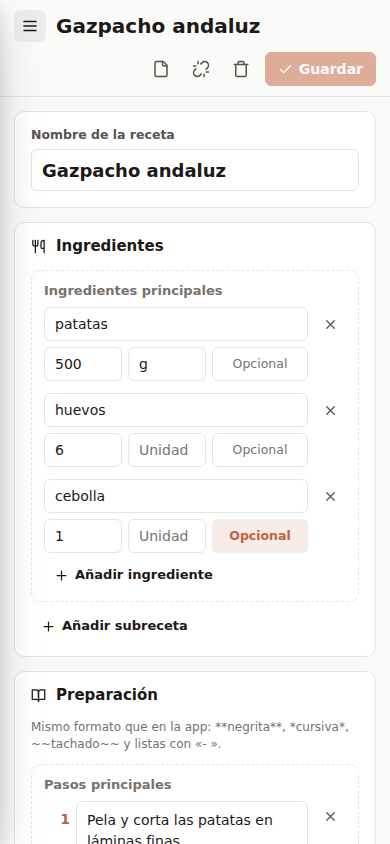
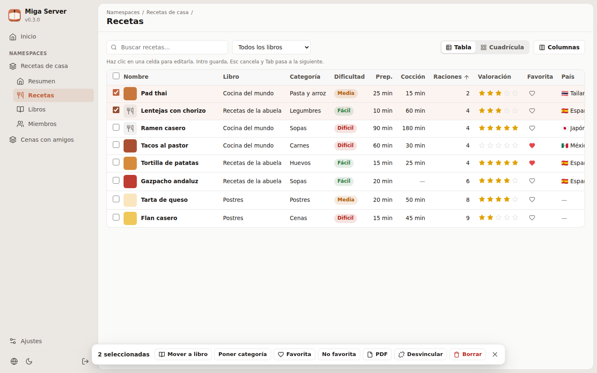
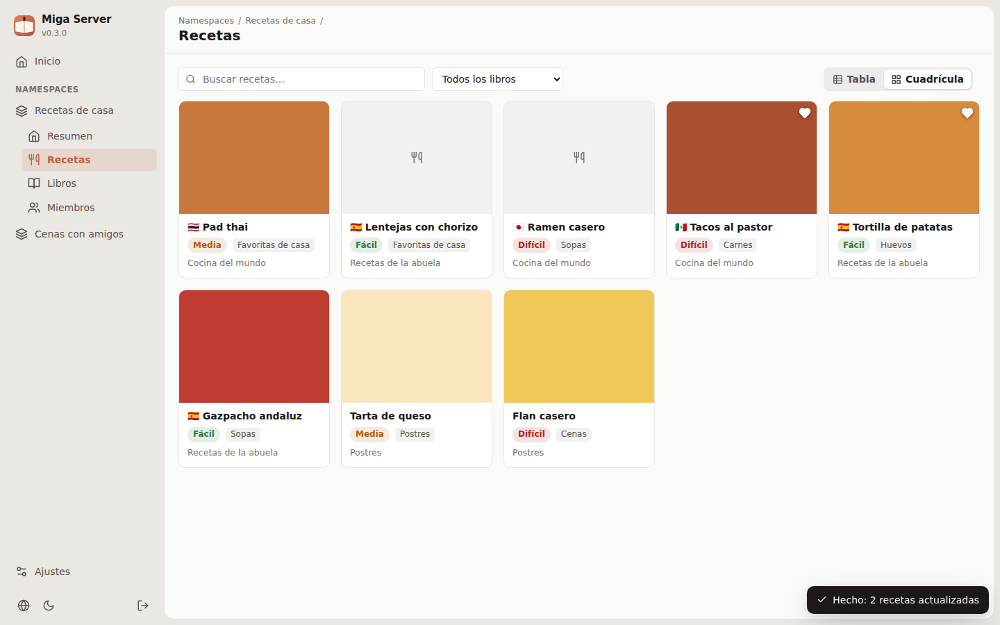

Espacios privados
cada namespace lo comparten los móviles que tú decidas, con un token por dispositivo que puedes revocar.
Para compartir libros y la lista de la compra en familia, Miga se conecta a un servidor que alojas tú. Es ligero, funciona con Docker y trae una web de administración muy completa.
docker-compose.yml de abajo, cambia el token de administrador por una cadena larga y aleatoria (por ejemplo, la salida de openssl rand -base64 32) y ejecuta docker compose up -d.http://tu-servidor:8080/ui), crea un namespace (por ejemplo, «casa») y un token para cada móvil.
docker-compose.yml · Con este archivo basta: la imagen trae todo lo necesario y los datos se guardan en el volumen miga-data.
services:
miga-server:
image: ghcr.io/calamares00/miga-server:latest
restart: unless-stopped
ports:
- "8080:8080"
environment:
MIGA_ADMIN_TOKEN: "cambia-esto-por-un-token-largo"
volumes:
- miga-data:/data
volumes:
miga-data:


cada namespace lo comparten los móviles que tú decidas, con un token por dispositivo que puedes revocar.
libros, recetas, fotos y listas, con «la última edición gana» aunque los relojes no coincidan.
edita recetas en una tabla como en una hoja de cálculo, cambia muchas a la vez o usa el editor completo.
descarga una receta o un libro entero con el mismo diseño que la app, en español o inglés.
una copia diaria con rotación, y copias y descargas con un clic.
una sola imagen Docker con SQLite; ponla detrás de un proxy con TLS para usarla fuera de casa.
Llega a Google Play este viernes a las 14:00, gratis para todo el mundo. Crea tu primer libro y guarda esa receta que siempre te piden.
Viernes 27 de noviembre · 14:00 (hora de España) · gratis
¡Ya disponible en Google Play!